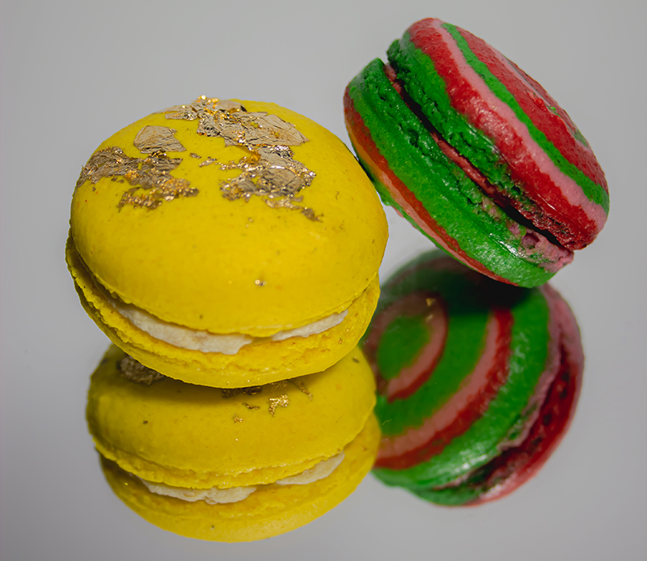

What is a macaron?
A macaron is a combination of two macaron shells (cookies) with a filling in between. The fillings can be whatever people like, from basics like vanilla and chocolate, to pistachio, Cheetos or even wasabi. Read more..
Where my passion for macarons came from.
From being a little kid eating merengues at my grandparents, to making macarons. A story of how I went from childhood memories, to experimenting with egg whites and sugar, to making macarons that I can be proud of. Read more..
How macarons are made & how I make macarons.
I also like to talk about all the steps it takes to make a delicious macaron, to get the perfect texture that makes a macaron so unique. Not a lot of ingredients are needed for a macaron, but the process can be quite challenging. I like to explain the different ways of macing macarons and how I do it myself. Read more..
A bit more history of the macaron.
But where did the macaron come from, who came up with the idea, who found out if you mix ingredients this way you get a cookie with this kind of texture. Of course there is also much to tell about that. Read more..